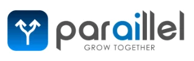
AI-powered tools that let teachers teach.
An AI-driven dashboard that makes it effortless to create engaging, personalized content, so teachers can focus on what matters most: teaching.
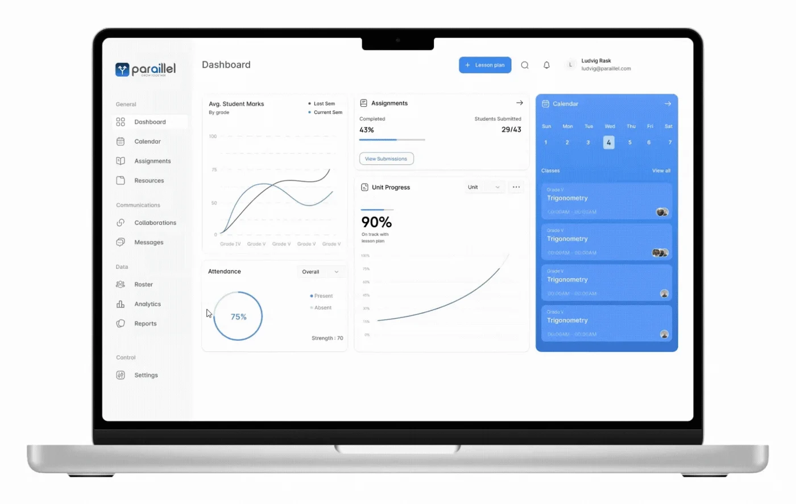
- Role
- Lead Product Designer
- Timeline
- 2023 – 2024
- Platform
- AI ed-tech web app
- Team
- Designers, researchers, developers and PMs
The challenge
Teachers in underserved Detroit schools struggle to personalize lessons with outdated tools, while admin work takes time away from students.
What I did
Led design and research for the core tools: the dashboard, calendar, assignments and the design system, built to WCAG 2.2.
The result
Teacher admin workload down 30%, with task success up 22% and user errors down 30% in testing.
The product
Bridging the education gap with AI
As an AI-driven educational platform, Paraillel streamlines classroom management, automates tedious tasks and personalizes learning, so teachers can focus on teaching and students stay engaged.
Paraillel’s goal: accessible, scalable and intelligent educational tools that support both educators and students, whatever their school’s resources.
I designed three core tools, the Dashboard, Calendar and Assignments, plus the Design System, with a focus on classroom efficiency and student engagement. Accessibility and personalized learning came first, so I followed the Web Content Accessibility Guidelines (WCAG) 2.2 to create an inclusive experience for educators and students with diverse abilities.
The problem
A strained education system
In underserved Detroit schools, teachers struggle to connect with students and personalize lessons because of outdated tools and limited resources.
Administrative burdens get in the way of student engagement and learning outcomes.
What we heard
- Lack of resources – in underserved districts.
- Time-consuming admin tasks.
- Limited engagement – and personalized learning for students.
- Fragmented, inaccessible technology.
The solution
A bridge to better education
Give teachers in underserved districts intuitive, AI-driven classroom tools that streamline admin, personalize learning and make the classroom accessible to every student.
Customizable dashboard
Teachers tailor lesson plans to each student’s progress and learning style.
Interactive calendar & reminders
Students track deadlines; teachers organize lesson plans efficiently.
Accessibility-focused design
Every student, including those with disabilities, can fully use the platform through WCAG 2.2-compliant features.
As Lead Product Designer and researcher, I designed AI-powered classroom tools that addressed critical pain points, empowering educators, engaging students and improving education for underserved communities in Detroit.
Project overview
Design process
I followed a structured, research-driven process that kept users at the center while aligning with business goals.
Empathize
Understanding the users
To build tools that served teachers and students, I started with the challenges they faced: interviews with educators and surveys with students to find pain points, plus close work with administrators and AI specialists to keep the design aligned with Paraillel’s mission.
User interviews
Exploratory, qualitative research with teachers and students about their day-to-day needs and frustrations with existing tools.
- Study type
- Generative (exploratory)
- Location
- Detroit · Remote
- Participants
- 15 teachers & students
- Length
- 30 minutes each
Key insights
- Simple to navigate. Teachers needed tools that were easy to use but handled complex classroom tasks: student tracking, task management and engagement.
- Personalized learning. Students needed an experience that adjusts to their pace and performance.
- Accessibility gaps. Educators and students both struggled with interfaces lacking proper color contrast, readable fonts and keyboard navigation.
“I spend too much time on administrative tasks instead of engaging with students.”
“A lot of platforms lack proper accessibility features, making it hard for some students to use them.”
“I often forget deadlines because I don’t have a clear overview of my assignments.”
“Some subjects are really boring or confusing.”
Empathy maps
Built from the interviews, to understand each user’s behavior, attitude, goals and challenges.
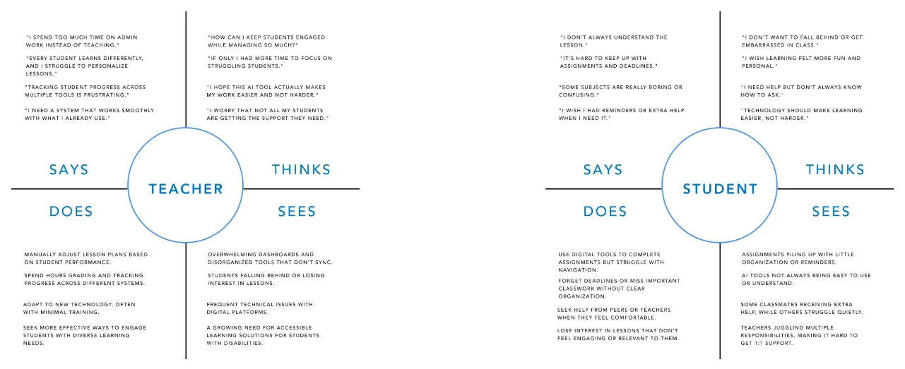
Define
Clarifying the problems
Research pointed to two personas that guided our design decisions:
- Educator persona – teachers with varying tech skills who need an intuitive way to manage classroom tasks, track performance and engage students with personalized content.
- Student persona – students who need interactive, personalized learning tools that adapt to their progress and give feedback.
Journey map
How teachers and students move through Paraillel, from awareness to long-term use, with the touchpoints, emotions, pain points and opportunities at each stage.
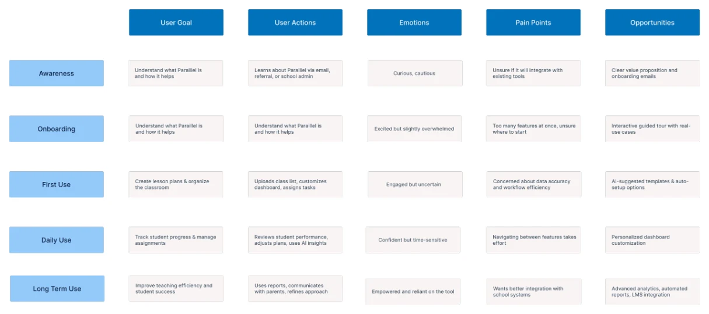
Ideate
Developing solutions
Brainstorming sessions turned the pain points into concepts:
- Customizable dashboards – for managing student data, tasks and classroom activities in one place.
- Interactive calendar – for organizing assignments, deadlines and events, with color-coded categories and reminders.
- Personalized learning tools – that use AI to recommend resources and assignments based on each student’s performance and preferences.
Information architecture
I structured Paraillel into a clear sitemap and mapped the user flows, so teachers and students could quickly reach the AI-powered dashboard, the calendar and the learning tools.
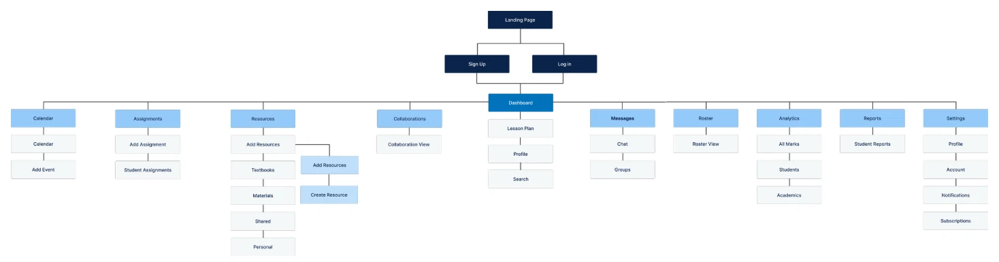
Applying UX laws
Hick’s Law
Fewer choices at once in the Dashboard and Calendar, so information is easy to find and act on.
Fitts’s Law
Buttons and navigation sized and spaced for easy use, especially for students with varying digital literacy.
Miller’s Law
Content in small, digestible chunks so teachers and students take in dashboards and lesson plans quickly.
Aesthetic-Usability Effect
A clean, modern interface that feels easier to use and earns trust.
Gestalt principles
Proximity, similarity and continuity in the design system for a structured, cohesive experience.
Design
From sketch to prototype
I sketched solutions on paper first, then built high-fidelity, interactive prototypes in Figma that met WCAG 2.2, so the platform would work for students with disabilities.
Paper wireframes
Hand-drawn sketches of the key features:
- A dynamic dashboard – for tracking students and simplifying lesson planning.
- An interactive calendar – to help students stay organized and teachers plan.
- Accessible UI elements – with clear navigation and inclusive design.
The sketches sparked conversations: teachers and students shared insights that shaped each feature before it went digital. Testing fast and iterating early kept real needs in mind from the start.
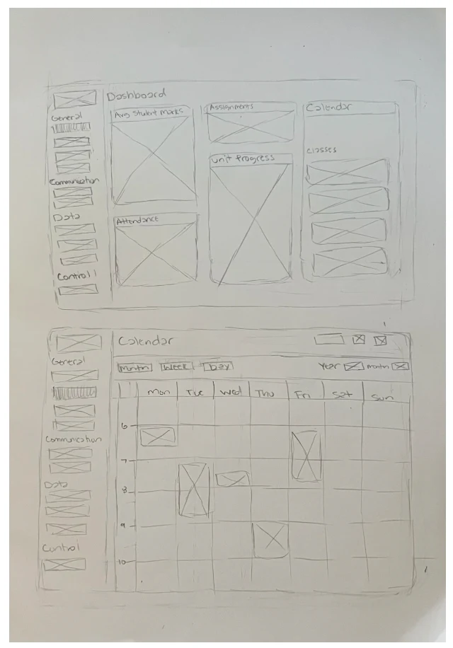
Low-fidelity wireframes
Quick wireframes of the dashboard and calendar mapped the core features and allowed rapid iteration before high fidelity.
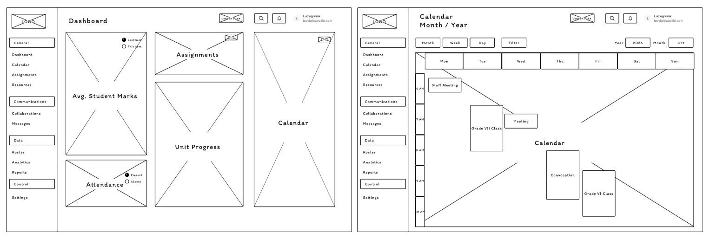
Design
Usability testing
We ran a usability study to see whether the Dashboard, Calendar and design system were easy for teachers and students to use: how well they completed tasks and how they engaged with the AI features.
- Method
- Unmoderated usability study
- Location
- Remote
- Participants
- 12
- Length
- 30 minutes each
Key findings
Overwhelmed by the dashboard
Too much information at once. Users wanted a streamlined dashboard they could customize.
Hard to find assignments
Users struggled to locate tasks quickly, so we added assignment tabs across the interface.
Hidden accessibility settings
Settings were buried in menus, so they were hard to find and adjust.
Design
High-fidelity design
I turned the sketches into high-fidelity prototypes, refining every detail for a seamless, inclusive experience. They let educators and students experience Paraillel before it launched.
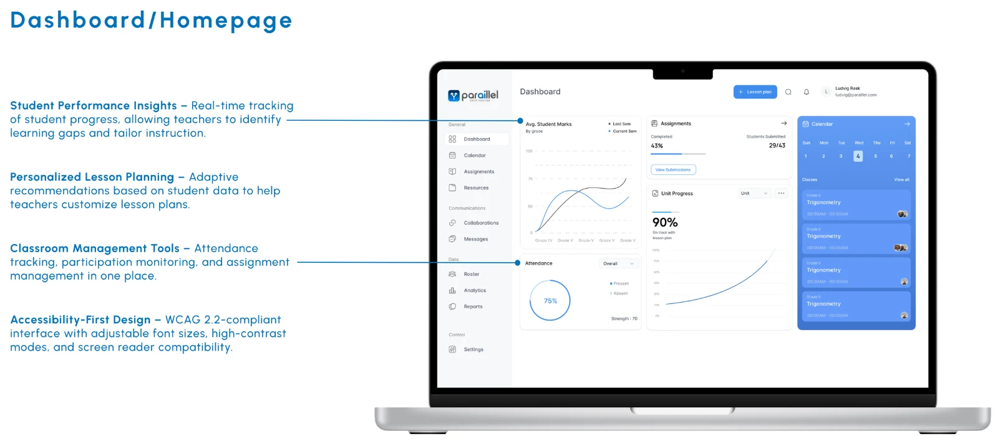
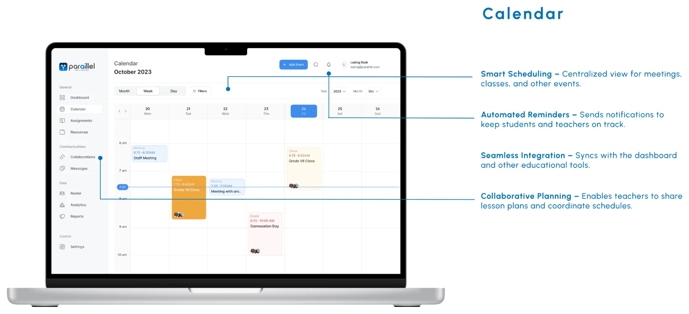
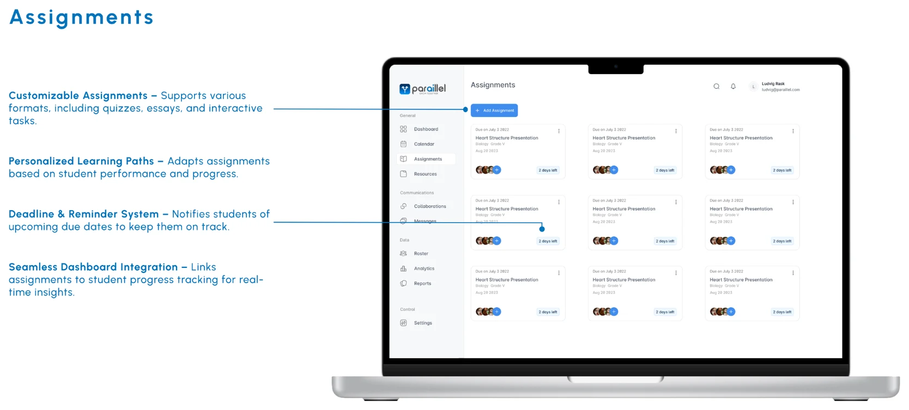
Tap an image to see it full size.
Design
Design system
The Paraillel design system brought consistency, scalability and accessibility to every AI-powered classroom tool. Standard components that follow WCAG 2.2 made the experience inclusive, sped up development and kept the platform visually cohesive.
Reflect
Takeaways
Designing for underserved school districts reinforced the importance of accessibility, scalability and user-centered solutions.
AI-powered tools streamlined admin for educators and personalized learning for students, making education more efficient and engaging. The project showed the value of continuous research, iterative design and stakeholder collaboration in building meaningful products.
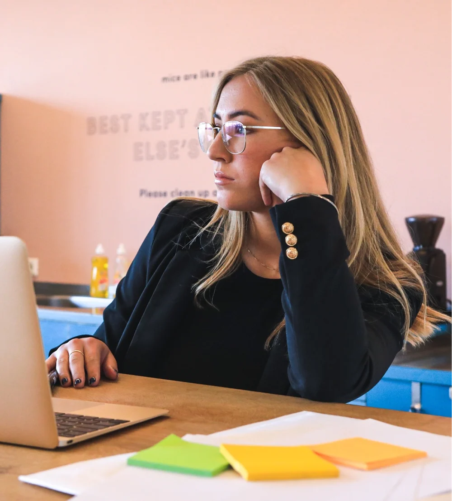
Reflect
Results & next steps
The project supported Paraillel’s business goals by reducing teacher admin workload by 30%, boosting student engagement and increasing daily use across classrooms.
Next, continued feedback from teachers and students will shape the dashboard as classroom needs evolve:
- Usability testing & iteration – with educators and students.
- Better AI personalization – from real classroom data.
- LMS integration – with existing school systems.
- Refined teacher & student dashboards – for more intuitive insights.
- Scaling accessibility – for diverse learning needs.
My work laid the foundation for a scalable, user-centered product that empowers educators and improves learning in underserved communities.
More case studies
Healthy HandThe Helper BeesGeisingerUT Health X CLITandemNetflix Tudum Case Study